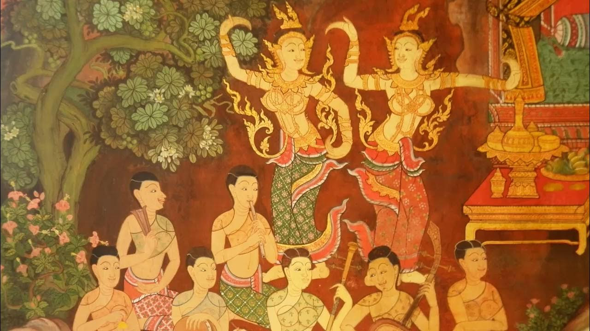

Thai folk songs are traditional musical styles, primarily from rural communities, characterized by regional variations, cultural themes, and the use of traditional instruments like the khaen (mouth organ) and ranat (xylophone). Major genres include Luk Thung (country music about working-class life), Mor Lam (fast-paced, rhythmic music from the northeastern Isan region), and Lanna folk music from the north, which reflects the unique heritage of the ancient Lanna Kingdom.
